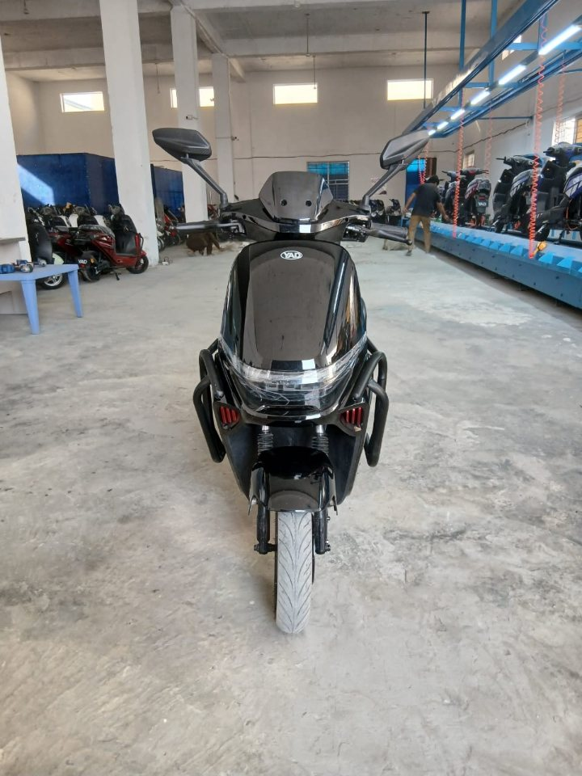
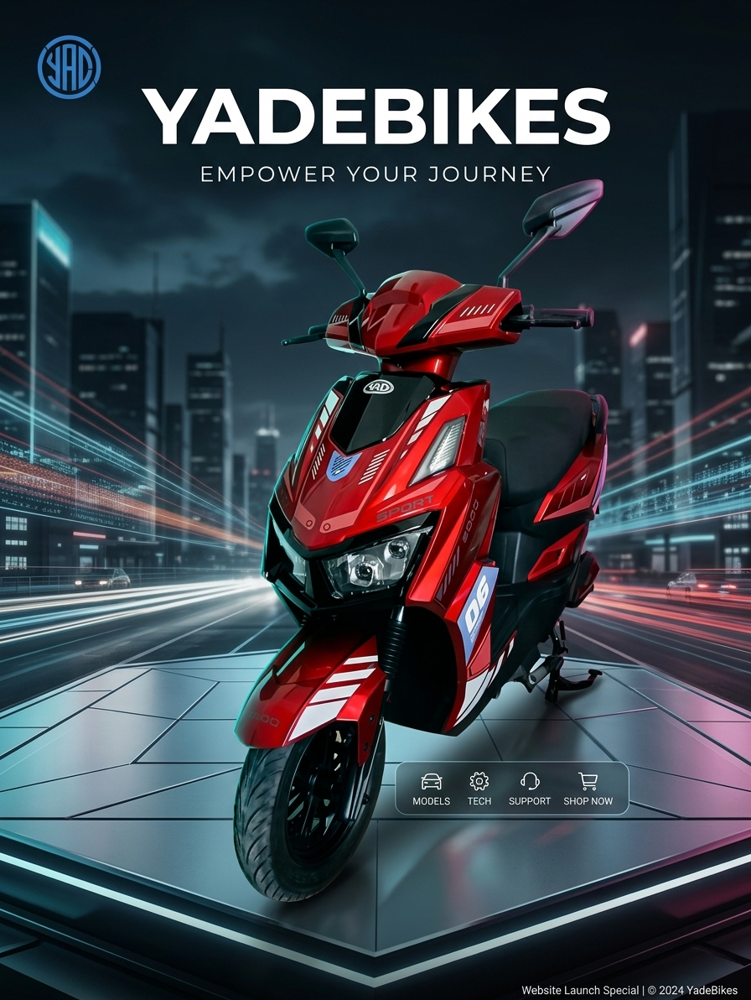
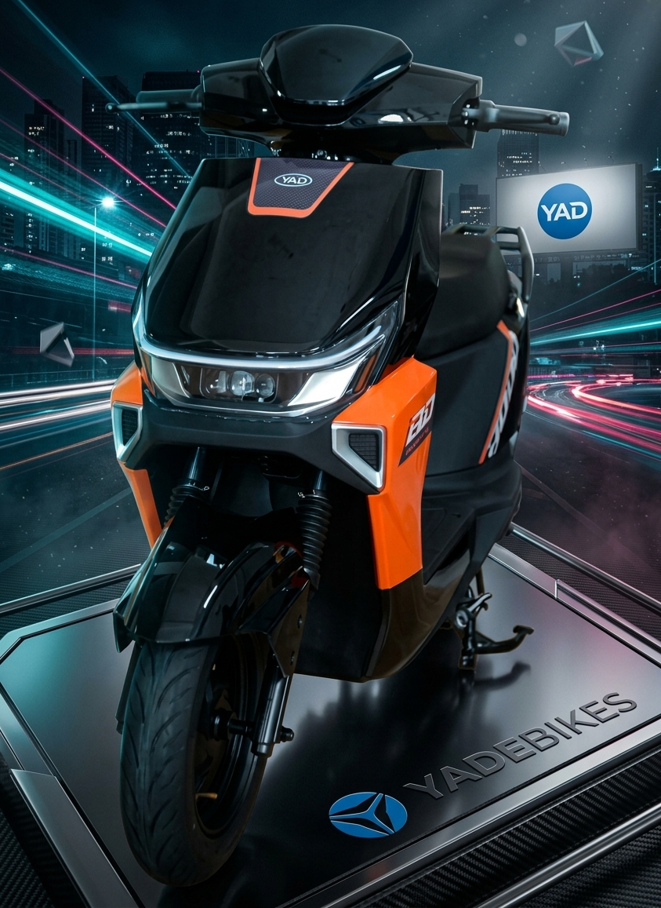
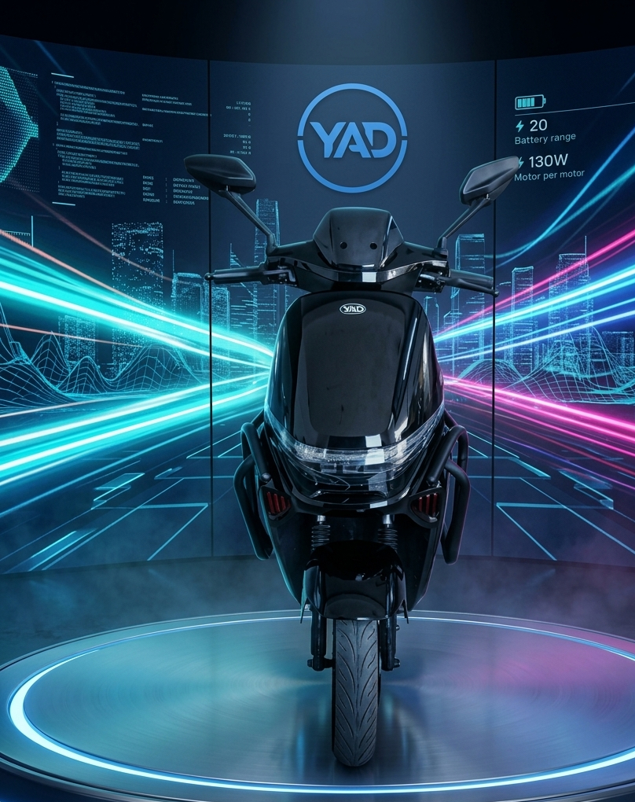
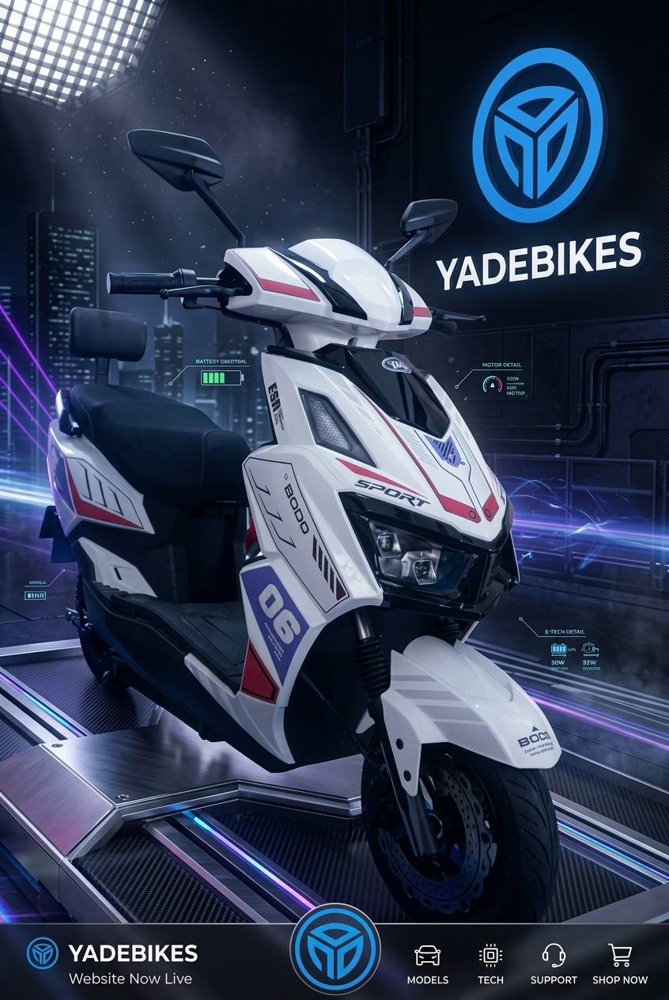

Ride the future. Be the changer.
YAD Electric Vehicles is the brand of Yi An Da Hubei Automobile Co (Pvt) Ltd, based in Sundar Small Industries Estate II, Lahore. We make electric scooters and three-wheelers for people who want reliable, low-cost and clean transport.
Our range runs from everyday city scooters to powerful 2000W models, plus comfortable three-wheelers for families and light work. Our scooters come with disc brakes, LED lighting, a strong frame with front guard bars and a one year warranty.
Our promise is simple: honest specifications, clear prices and a team you can call directly.
Explore modelsContact us
Inside YAD




Our values
Strong build
Durable frames and guard bars made for daily roads.
Safety first
Disc brakes and bright LED lights as standard.
Clean mobility
Zero emission transport for a better tomorrow.
Our team
Dr. M. Rahim Jafar
CEO
M. Mehboob Jafar
Director Sales
Engr. Faisal Bashir Ch.
Executive Director